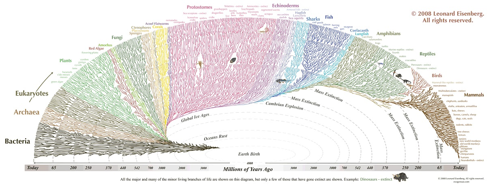

Biology
Einteilung der Lebewesen (Biosystematik)
- Lebewesen
- (Notiz: Viren gelten nicht als Lebewesen.)
- Domäne
- z.B. Bakterien, Archaeen, Eukaryoten
- Reich
- z.B. Tiere, Pflanzen, Pilze
- Stamm
- z.B. Algen, Wirbeltiere, Weichtiere
- Klasse
- z.B. Säugetiere, Amphibien, Reptilien, Vögel, Insekten
- Ordnung, Teilordnung, Überfamilie
- Familie, Unterfamilie, Tribus
- Gattung
- Art
Beispiel Mensch:
- Reich: Vielzeller
- Stamm: Wirbeltiere
- Klasse: Säugetiere
- Ordnung: Primaten
- Familie: Menschenaffen (Hominidae)
- Unterfamilie: Homininae
- Tribus: Hominini
- Gattung: Homo
- Art: Mensch
Evolution
12 Epochen
Paläozoikum (Erdaltertum 288 Ma)
Präkambrium (3,5 Mrd - 542 Mil)
Bakterien, Viren, Photosynthese, Vielzeller,
Photosynthese betreibende Cyanobakterien produzieren Sauerstoff. Es kommt zur Bildung der Ozonschicht und mithin zum Schutz vor UV-Strahlung. Den meisten Bakterien im Meer bringt der giftige Sauerstoff allerdings den Tod.
Entwicklungssprung: Eukaryoten
Eukarytoen (ca. 2 Mrd)
Zwei Bakterien vereinigen sich zum wechselseitigen Vorteil. Das umschlossene Bakterium bildet am Ende den Zellkern (Mitochondrium) mit der Aufgabe Energie in Form von ATP (Adenosintriphosphat) herzustellen und das Erbgut zu verwalten.
Die ersten Vielzeller (ca. 1.2 Mrd)
Irgendwann nach der Sauerstoffkatastrophe beginnen Eukaryoten sich Cyanobakterien einzuverleiben. Irgenwann kommt es dazu, dass sich ein solches Bakterium nach der Zellteilung nicht vollständig trennt. Die ersten Mehrzeller entstehen.
Kambrium (541 - 485,4)
Zu Beginn des Kambriums: Kambrische Explosion

Ordovizium (485,4 - 443,4)
Silur (443,4 - 419,2)
Devon (419,2 - 358,9)
Karbon (358,9 - 298,9)
Perm (298,9 - 252,2)
Mesozoikum (Erdmittelalter 186 Ma)
Trias (363,2 - 201,3)
Jura (201,3 - 145)
Kreide (145 - 66)
Paläogen (66 - 23)
Känozoikum (Erdneuzeit, 66 Ma)
Neogen (23 - 2,5)
Quartär (2,5 - 0)
Die 5 großen Massensterben
- Ordovizium
- Devon
- Perm
- Kreide
Evolution des Menschen
Menschen gehören zur Familie der Hominidae (eingedeutscht: Hominiden, Menschenaffen), die entsprechende Gattung ist Homo.
Vorgeschichtliche Arten:
- Ardipithecus
- Ardipithecus ramidus: Der erste, der aufrecht geht. Lebte aber noch im Wald.
- Vormenschen: Australopithecinen
- Urmenschen: Homo habilis, Homo rudofensis
- Frühmenschen:
Australopithecinen
- aufrechter Gang
- A. anamensis
- A. afarensis Berühmter Skelettfund: Lucy
Homo
- H. rudolfensis
- H. erectus
Viren
Haben keine eigenständige Replikation und sind deshalb auf den Stoffwechsel einer Wirtszelle angewiesen.
Viren kommen in zwei Erscheinungsformen vor:
- Als DNA oder RNA in der Zelle eines Wirts.
- Als DNA oder RNA in einer Proteinhülle (Virion).
Übertragung
- Blut
- Luft
- Schmierinfektion